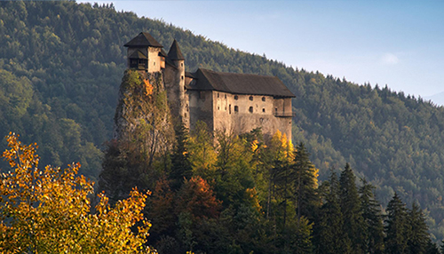
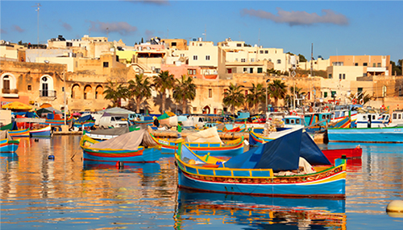

Slovakia

The most of my life I lived in a small country in the middle of Europe called Slovakia. That is also the country I was born. As I mentioned it is a small country, Slovakia's small size is possibly its biggest attraction. You can traipse woodsy waterfall-filled gorges one day and yodel from 2500m-plus peaks the next. It is a country with a beautiful nature, culture, a lot of old traditions and very nice and friendly people. If you want to say that you've been to Slovakia, you should visit at least one of the most interesting cities, like Bratislava, Kosice, Liptov, Bardejov etc., unique nature, like beautiful natural caves or High Tatras - amazing mountains or Slovak Paradise and UNESCO sights that survived centuries. A lot of cities, like Bardejov or historical castles belong under UNESCO as they are very unique.
When you are in Slovakia you also have to try unique Slovakian food and traditional meal called "bryndzove halusky" wich is made with a unique sheep cheese that you cannot find anywhere else.
More info
You can learn more about this country on Slovakian official website.Malta

After I finished my university I went to live to Malta for three months, where I was working as an Intern in one of the state companies. It was a really nice experience as during living somewhere even for a short period you can learn a lot about the country, people and their traditions and habits.
Malta is a small island in the Mediterrean see, but it has a lot of to see. Especially it has a lot of beautiful beaches and places to go swimming or jumping from the cliffs. You will find there great prehistoric temples, fossil-studded cliffs, hidden coves, thrilling diving opportunities and a lot of historical places. And if you decide to visit Malta don't forget to go to Blue Lagoon in Comino Island, where the movie Blue Lagoon was filmed. Also in Malta you can find a lot of nice places to go out and that are open every day till morning. All the best places to go dancing are located in the area called Paceville.
More info
You can learn more about this country on Maltese official website.Two new HTML5 elements
Element <details>
The <details> tag specifies additional details that the user can view or hide on demand. The <details> tag can be used to create an interactive widget that the user can open and close. Any sort of content can be put inside the <details> tag. The content of a <details> element should not be visible unless the open attribute is set.
The most relevant attribute is open "open", that specifies that the details should be visible (open) to the user
It is supported by Chrome 12.0, Safari 6.0 and Opera 15.0. It is not supported by other browsers.
Element <summary>
The <summary> tag defines a visible heading for the <summary> element. The heading can be clicked to view/hide the details.
It is supported by Chrome 12.0, Safari 6.0 and Opera 15.0. It is not supported by other browsers.